Description
This command runs Bayesian or maximum likelihood estimation.
The following information will be displayed by the command:
- results from posterior optimization (also for maximum likelihood)
- marginal log data density
- posterior mean and highest posterior density interval (shortest credible set) from posterior simulation
- convergence diagnostic table when only one MCM chain is used or Metropolis-Hastings convergence graphs documented in Pfeifer (2014) in case of multiple MCM chains
- table with numerical inefficiency factors of the MCMC
- graphs with prior, posterior, and mode
- graphs of smoothed shocks, smoothed observation errors, smoothed and historical variables
Note that the posterior moments, smoothed variables, k-step ahead
filtered variables and forecasts (when requested) will only be
computed on the variables listed after the estimation command.
Alternatively, one can choose to compute these quantities on all
endogenous or on all observed variables (see
consider_all_endogenous and consider_only_observed
options below). If no variable is listed after the estimation
command, then Dynare will interactively ask which variable set to use.
Also, during the MCMC (Bayesian estimation with mh_replic>0) a
(graphical or text) waiting bar is displayed showing the progress of the
Monte-Carlo and the current value of the acceptance ratio. Note that
if the load_mh_file option is used (see below) the reported
acceptance ratio does not take into account the draws from the previous
MCMC. In the literature there is a general agreement for saying that the
acceptance ratio should be close to one third or one quarter. If this
not the case, you can stop the MCMC (Ctrl-C) and change the value
of option mh_jscale (see below).
Note that by default Dynare generates random numbers using the algorithm
mt199937ar (ie Mersenne Twister method) with a seed set equal
to 0. Consequently the MCMCs in Dynare are deterministic: one
will get exactly the same results across different Dynare runs
(ceteris paribus). For instance, the posterior moments or posterior
densities will be exactly the same. This behaviour allows to easily
identify the consequences of a change on the model, the priors or the
estimation options. But one may also want to check that across multiple
runs, with different sequences of proposals, the returned results are
almost identical. This should be true if the number of iterations
(ie the value of mh_replic) is important enough to ensure the
convergence of the MCMC to its ergodic distribution. In this case the
default behaviour of the random number generators in not wanted, and the
user should set the seed according to the system clock before the
estimation command using the following command:
set_dynare_seed('clock');
so that the sequence of proposals will be different across different runs.
Algorithms
The Monte Carlo Markov Chain (MCMC) diagnostics are generated by the estimation command if mh_replic is larger than 2000 and if option nodiagnostic is not used. If mh_nblocks is equal to one, the convergence diagnostics of Geweke (1992,1999) is computed. It uses a chi square test to compare the means of the first and last draws specified by geweke_interval after discarding the burnin of mh_drop. The test is computed using variance estimates under the assumption of no serial correlation as well as using tapering windows specified in taper_steps. If mh_nblocks is larger than 1, the convergence diagnostics of Brooks and Gelman (1998) are used instead. As described in section 3 of Brooks and Gelman (1998) the univariate convergence diagnostics are based on comparing pooled and within MCMC moments (Dynare displays the second and third order moments, and the length of the Highest Probability Density interval covering 80% of the posterior distribution). Due to computational reasons, the multivariate convergence diagnostic does not follow Brooks and Gelman (1998) strictly, but rather applies their idea for univariate convergence diagnostics to the range of the posterior likelihood function instead of the individual parameters. The posterior kernel is used to aggregate the parameters into a scalar statistic whose convergence is then checked using the Brooks and Gelman (1998) univariate convergence diagnostic.
The inefficiency factors are computed as in Giordano et al. (2011) based on Parzen windows as in e.g. Andrews (1991).
Options
datafile = FILENAMEThe datafile: a .m file, a .mat file, a .csv file, or a .xls/.xlsx file (under Octave, the io package from Octave-Forge is required for the .csv and .xlsx formats and the .xls file extension is not supported). Note that the base name (i.e. without extension) of the datafile has to be different from the base name of the model file. If there are several files named
FILENAME, but with different file endings, the file name must be included in quoted strings and provide the file ending likeestimation(datafile='../fsdat_simul.mat',...)dirname = FILENAMEDirectory in which to store
estimationoutput. To pass a subdirectory of a directory, you must quote the argument. Default:<mod_file>xls_sheet = NAMEThe name of the sheet with the data in an Excel file
xls_range = RANGEThe range with the data in an Excel file. For example,
xls_range=B2:D200nobs = INTEGERThe number of observations following first_obs to be used. Default: all observations in the file after
first_obsnobs = [INTEGER1:INTEGER2]Runs a recursive estimation and forecast for samples of size ranging of INTEGER1 to INTEGER2. Option
forecastmust also be specified. The forecasts are stored in theRecursiveForecastfield of the results structure (see RecursiveForecast). The respective results structuresoo_are saved inoo_recursive_(see oo_recursive_) and are indexed with the respective sample length.first_obs = INTEGERThe number of the first observation to be used. In case of estimating a DSGE-VAR,
first_obsneeds to be larger than the number of lags. Default:1first_obs = [INTEGER1:INTEGER2]Runs a rolling window estimation and forecast for samples of fixed size
nobsstarting with the first observation ranging from INTEGER1 to INTEGER2. Optionforecastmust also be specified. This option is incompatible with requesting recursive forecasts using an expanding window (see nobs). The respective results structuresoo_are saved inoo_recursive_(see oo_recursive_) and are indexed with the respective first observation of the rolling window.prefilter = INTEGERA value of
1means that the estimation procedure will demean each data series by its empirical mean. If the loglinear option without the logdata option is requested, the data will first be logged and then demeaned. Default:0, i.e. no prefilteringpresample = INTEGERThe number of observations after first_obs to be skipped before evaluating the likelihood. These presample observations do not enter the likelihood, but are used as a training sample for starting the Kalman filter iterations. This option is incompatible with estimating a DSGE-VAR. Default:
0loglinearComputes a log-linear approximation of the model instead of a linear approximation. As always in the context of estimation, the data must correspond to the definition of the variables used in the model (see Pfeifer (2013) for more details on how to correctly specify observation equations linking model variables and the data). If you specify the loglinear option, Dynare will take the logarithm of both your model variables and of your data as it assumes the data to correspond to the original non-logged model variables. The displayed posterior results like impulse responses, smoothed variables, and moments will be for the logged variables, not the original un-logged ones. Default: computes a linear approximation
logdataDynare applies the 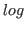 transformation to the provided data if a log-linearization of the model is requested (loglinear) unless
logdataoption is used. This option is necessary if the user provides data already in logs, otherwise the transformation will be applied twice (this may result in complex data).plot_priors = INTEGERControl the plotting of priors: 1
0No prior plot
1Prior density for each estimated parameter is plotted. It is important to check that the actual shape of prior densities matches what you have in mind. Ill-chosen values for the prior standard density can result in absurd prior densities.
Default value is
1.nographSee nograph.
posterior_nographSuppresses the generation of graphs associated with Bayesian IRFs (bayesian_irf), posterior smoothed objects (smoother), and posterior forecasts (forecast).
posterior_graphRe-enables the generation of graphs previously shut off with posterior_nograph.
nodisplaySee nodisplay.
graph_format = FORMATgraph_format = ( FORMAT, FORMAT… )See graph_format.
lik_init = INTEGERType of initialization of Kalman filter:
1For stationary models, the initial matrix of variance of the error of forecast is set equal to the unconditional variance of the state variables
2For nonstationary models: a wide prior is used with an initial matrix of variance of the error of forecast diagonal with 10 on the diagonal (follows the suggestion of Harvey and Phillips(1979))
3For nonstationary models: use a diffuse filter (use rather the
diffuse_filteroption)4The filter is initialized with the fixed point of the Riccati equation
5Use i) option 2 for the non-stationary elements by setting their initial variance in the forecast error matrix to 10 on the diagonal and all covariances to 0 and ii) option 1 for the stationary elements.
Default value is
1. For advanced use only.lik_algo = INTEGERFor internal use and testing only.
conf_sig = DOUBLEConfidence interval used for classical forecasting after estimation. See conf_sig.
mh_conf_sig = DOUBLEConfidence/HPD interval used for the computation of prior and posterior statistics like: parameter distributions, prior/posterior moments, conditional variance decomposition, impulse response functions, Bayesian forecasting. Default:
0.9mh_replic = INTEGERNumber of replications for Metropolis-Hastings algorithm. For the time being,
mh_replicshould be larger than1200. Default:20000sub_draws = INTEGERnumber of draws from the MCMC that are used to compute posterior distribution of various objects (smoothed variable, smoothed shocks, forecast, moments, IRF). The draws used to compute these posterior moments are sampled uniformly in the estimated empirical posterior distribution (ie draws of the MCMC).
sub_drawsshould be smaller than the total number of MCMC draws available. Default:min(posterior_max_subsample_draws,(Total number of draws)*(number of chains))posterior_max_subsample_draws = INTEGERmaximum number of draws from the MCMC used to compute posterior distribution of various objects (smoothed variable, smoothed shocks, forecast, moments, IRF), if not overriden by option sub_draws. Default:
1200mh_nblocks = INTEGERNumber of parallel chains for Metropolis-Hastings algorithm. Default:
2mh_drop = DOUBLEThe fraction of initially generated parameter vectors to be dropped as a burnin before using posterior simulations. Default:
0.5mh_jscale = DOUBLEThe scale parameter of the jumping distribution’s covariance matrix (Metropolis-Hastings or TaRB-algorithm). The default value is rarely satisfactory. This option must be tuned to obtain, ideally, an acceptance ratio of 25%-33%. Basically, the idea is to increase the variance of the jumping distribution if the acceptance ratio is too high, and decrease the same variance if the acceptance ratio is too low. In some situations it may help to consider parameter-specific values for this scale parameter. This can be done in the estimated_params- block.
Note that
mode_compute=6will tune the scale parameter to achieve an acceptance rate of AcceptanceRateTarget. The resulting scale parameter will be saved into a file named MODEL_FILENAME_mh_scale.mat. This file can be loaded in subsequent runs via theposterior_sampler_options-option scale_file. Bothmode_compute=6andscale_filewill overwrite any value specified inestimated_paramswith the tuned value. Default:0.2mh_init_scale = DOUBLEThe scale to be used for drawing the initial value of the Metropolis-Hastings chain. Generally, the starting points should be overdispersed for the Brooks and Gelman (1998)-convergence diagnostics to be meaningful. Default: 2*
mh_jscale. It is important to keep in mind thatmh_init_scaleis set at the beginning of Dynare execution, i.e. the default will not take into account potential changes in mh_jscale introduced by eithermode_compute=6or theposterior_sampler_options-option scale_file. Ifmh_init_scaleis too wide during initalization of the posterior sampler so that 100 tested draws are inadmissible (e.g. Blanchard-Kahn conditions are always violated), Dynare will request user input of a newmh_init_scalevalue with which the next 100 draws will be drawn and tested. If the nointeractive-option has been invoked, the program will instead automatically decreasemh_init_scaleby 10 percent after 100 futile draws and try another 100 draws. This iterative procedure will take place at most 10 times, at which point Dynare will abort with an error message.mh_recoverAttempts to recover a Metropolis-Hastings simulation that crashed prematurely, starting with the last available saved
mh-file. Shouldn’t be used together withload_mh_fileor a differentmh_replicthan in the crashed run. Since Dynare 4.5 the proposal density from the previous run will automatically be loaded. In older versions, to assure a neat continuation of the chain with the same proposal density, you should provide themode_fileused in the previous run or the same user-definedmcmc_jumping_covariancewhen using this option. Note that under Octave, a neat continuation of the crashed chain with the respective last random number generator state is currently not supported.mh_mode = INTEGER…
mode_file = FILENAMEName of the file containing previous value for the mode. When computing the mode, Dynare stores the mode (
xparam1) and the hessian (hh, only ifcova_compute=1) in a file called MODEL_FILENAME_mode.mat. After a successful run of the estimation command, themode_filewill be disabled to prevent other function calls from implicitly using an updated mode-file. Thus, if the mod-file contains subsequentestimationcommands, themode_fileoption, if desired, needs to be specified again.mode_compute = INTEGER | FUNCTION_NAMESpecifies the optimizer for the mode computation:
0The mode isn’t computed. When
mode_fileoption is specified, the mode is simply read from that file.When
mode_fileoption is not specified, Dynare reports the value of the log posterior (log likelihood) evaluated at the initial value of the parameters.When
mode_fileoption is not specified and there is noestimated_paramsblock, but thesmootheroption is used, it is a roundabout way to compute the smoothed value of the variables of a model with calibrated parameters.1Uses
fminconoptimization routine (available under MATLAB if the Optimization Toolbox is installed; not available under Octave)2Uses the continuous simulated annealing global optimization algorithm described in Corana et al. (1987) and Goffe et al. (1994).
3Uses
fminuncoptimization routine (available under MATLAB if the optimization toolbox is installed; available under Octave if the optim package from Octave-Forge is installed)4Uses Chris Sims’s
csminwel5Uses Marco Ratto’s
newrat. This value is not compatible with non linear filters or DSGE-VAR models. This is a slice optimizer: most iterations are a sequence of univariate optimization step, one for each estimated parameter or shock. Usescsminwelfor line search in each step.6Uses a Monte-Carlo based optimization routine (see Dynare wiki for more details)
7Uses
fminsearch, a simplex based optimization routine (available under MATLAB if the optimization toolbox is installed; available under Octave if the optim package from Octave-Forge is installed)8Uses Dynare implementation of the Nelder-Mead simplex based optimization routine (generally more efficient than the MATLAB or Octave implementation available with
mode_compute=7)9Uses the CMA-ES (Covariance Matrix Adaptation Evolution Strategy) algorithm of Hansen and Kern (2004), an evolutionary algorithm for difficult non-linear non-convex optimization
10Uses the simpsa algorithm, based on the combination of the non-linear simplex and simulated annealing algorithms and proposed by Cardoso, Salcedo and Feyo de Azevedo (1996).
11This is not strictly speaking an optimization algorithm. The (estimated) parameters are treated as state variables and estimated jointly with the original state variables of the model using a nonlinear filter. The algorithm implemented in Dynare is described in Liu and West (2001).
12Uses
particleswarmoptimization routine (available under MATLAB if the Global Optimization Toolbox is installed; not available under Octave).101Uses the SolveOpt algorithm for local nonlinear optimization problems proposed by Kuntsevich and Kappel (1997).
102Uses
simulannealbndoptimization routine (available under MATLAB if the Global Optimization Toolbox is installed; not available under Octave)FUNCTION_NAMEIt is also possible to give a FUNCTION_NAME to this option, instead of an INTEGER. In that case, Dynare takes the return value of that function as the posterior mode.
Default value is
4.silent_optimizerInstructs Dynare to run mode computing/optimization silently without displaying results or saving files in between. Useful when running loops.
mcmc_jumping_covariance = hessian|prior_variance|identity_matrix|FILENAMETells Dynare which covariance to use for the proposal density of the MCMC sampler.
mcmc_jumping_covariancecan be one of the following:hessianUses the Hessian matrix computed at the mode.
prior_varianceUses the prior variances. No infinite prior variances are allowed in this case.
identity_matrixUses an identity matrix.
FILENAMELoads an arbitrary user-specified covariance matrix from
FILENAME.mat. The covariance matrix must be saved in a variable namedjumping_covariance, must be square, positive definite, and have the same dimension as the number of estimated parameters.
Note that the covariance matrices are still scaled with mh_jscale. Default value is
hessian.mode_checkTells Dynare to plot the posterior density for values around the computed mode for each estimated parameter in turn. This is helpful to diagnose problems with the optimizer. Note that for
order>1, the likelihood function resulting from the particle filter is not differentiable anymore due to random chatter introduced by selecting different particles for different parameter values. For this reason, themode_check-plot may look wiggly.mode_check_neighbourhood_size = DOUBLEUsed in conjunction with option
mode_check, gives the width of the window around the posterior mode to be displayed on the diagnostic plots. This width is expressed in percentage deviation. TheInfvalue is allowed, and will trigger a plot over the entire domain (see alsomode_check_symmetric_plots). Default:0.5.mode_check_symmetric_plots = INTEGERUsed in conjunction with option
mode_check, if set to1, tells Dynare to ensure that the check plots are symmetric around the posterior mode. A value of0allows to have asymmetric plots, which can be useful if the posterior mode is close to a domain boundary, or in conjunction withmode_check_neighbourhood_size = Infwhen the domain in not the entire real line. Default:1.mode_check_number_of_points = INTEGERNumber of points around the posterior mode where the posterior kernel is evaluated (for each parameter). Default is
20prior_trunc = DOUBLEProbability of extreme values of the prior density that is ignored when computing bounds for the parameters. Default:
1e-32huge_number = DOUBLEValue for replacing infinite values in the definition of (prior) bounds when finite values are required for computational reasons. Default:
1e7load_mh_fileTells Dynare to add to previous Metropolis-Hastings simulations instead of starting from scratch. Since Dynare 4.5 the proposal density from the previous run will automatically be loaded. In older versions, to assure a neat continuation of the chain with the same proposal density, you should provide the
mode_fileused in the previous run or the same user-definedmcmc_jumping_covariancewhen using this option. Shouldn’t be used together withmh_recover. Note that under Octave, a neat continuation of the chain with the last random number generator state of the already present draws is currently not supported.load_results_after_load_mhThis option is available when loading a previous MCMC run without adding additional draws, i.e. when
load_mh_fileis specified withmh_replic=0. It tells Dynare to load the previously computed convergence diagnostics, marginal data density, and posterior statistics from an existing_results-file instead of recomputing them.optim = (NAME, VALUE, ...)A list of NAME and VALUE pairs. Can be used to set options for the optimization routines. The set of available options depends on the selected optimization routine (ie on the value of option mode_compute):
1, 3, 7, 12Available options are given in the documentation of the MATLAB Optimization Toolbox or in Octave’s documentation.
2Available options are:
'initial_step_length'Initial step length. Default:
1'initial_temperature'Initial temperature. Default:
15'MaxIter'Maximum number of function evaluations. Default:
100000'neps'Number of final function values used to decide upon termination. Default:
10'ns'Number of cycles. Default:
10'nt'Number of iterations before temperature reduction. Default:
10'step_length_c'Step length adjustment. Default:
0.1'TolFun'Stopping criteria. Default:
1e-8'rt'Temperature reduction factor. Default:
0.1'verbosity'Controls verbosity of display during optimization, ranging from 0 (silent) to 3 (each function evaluation). Default:
1
4Available options are:
'InitialInverseHessian'Initial approximation for the inverse of the Hessian matrix of the posterior kernel (or likelihood). Obviously this approximation has to be a square, positive definite and symmetric matrix. Default:
'1e-4*eye(nx)', wherenxis the number of parameters to be estimated.'MaxIter'Maximum number of iterations. Default:
1000'NumgradAlgorithm'Possible values are
2,3and5respectively corresponding to the two, three and five points formula used to compute the gradient of the objective function (see Abramowitz and Stegun (1964)). Values13and15are more experimental. If perturbations on the right and the left increase the value of the objective function (we minimize this function) then we force the corresponding element of the gradient to be zero. The idea is to temporarily reduce the size of the optimization problem. Default:2.'NumgradEpsilon'Size of the perturbation used to compute numerically the gradient of the objective function. Default:
1e-6'TolFun'Stopping criteria. Default:
1e-7'verbosity'Controls verbosity of display during optimization. Set to 0 to set to silent. Default:
1'SaveFiles'Controls saving of intermediate results during optimization. Set to 0 to shut off saving. Default:
1
5Available options are:
'Hessian'Triggers three types of Hessian computations.
0: outer product gradient;1default DYNARE Hessian routine;2’mixed’ outer product gradient, where diagonal elements are obtained using second order derivation formula and outer product is used for correlation structure. Both {0} and {2} options require univariate filters, to ensure using maximum number of individual densities and a positive definite Hessian. Both {0} and {2} are quicker than default DYNARE numeric Hessian, but provide decent starting values for Metropolis for large models (option {2} being more accurate than {0}). Default:1.'MaxIter'Maximum number of iterations. Default:
1000'TolFun'Stopping criteria. Default:
1e-5for numerical derivatives1e-7for analytic derivatives.'verbosity'Controls verbosity of display during optimization. Set to 0 to set to silent. Default:
1'SaveFiles'Controls saving of intermediate results during optimization. Set to 0 to shut off saving. Default:
1
6Available options are:
'AcceptanceRateTarget'A real number between zero and one. The scale parameter of the jumping distribution is adjusted so that the effective acceptance rate matches the value of option
'AcceptanceRateTarget'. Default:1.0/3.0'InitialCovarianceMatrix'Initial covariance matrix of the jumping distribution. Default is
'previous'if optionmode_fileis used,'prior'otherwise.'nclimb-mh'Number of iterations in the last MCMC (climbing mode). Default:
200000'ncov-mh'Number of iterations used for updating the covariance matrix of the jumping distribution. Default:
20000'nscale-mh'Maximum number of iterations used for adjusting the scale parameter of the jumping distribution. Default:
200000'NumberOfMh'Number of MCMC run sequentially. Default:
3
8Available options are:
'InitialSimplexSize'Initial size of the simplex, expressed as percentage deviation from the provided initial guess in each direction. Default:
.05'MaxIter'Maximum number of iterations. Default:
5000'MaxFunEvals'Maximum number of objective function evaluations. No default.
'MaxFunvEvalFactor'Set
MaxFunvEvalsequal toMaxFunvEvalFactortimes the number of estimated parameters. Default:500.'TolFun'Tolerance parameter (w.r.t the objective function). Default:
1e-4'TolX'Tolerance parameter (w.r.t the instruments). Default:
1e-4'verbosity'Controls verbosity of display during optimization. Set to 0 to set to silent. Default:
1
9Available options are:
'CMAESResume'Resume previous run. Requires the
variablescmaes.matfrom the last run. Set to 1 to enable. Default:0'MaxIter'Maximum number of iterations.
'MaxFunEvals'Maximum number of objective function evaluations. Default:
Inf.'TolFun'Tolerance parameter (w.r.t the objective function). Default:
1e-7'TolX'Tolerance parameter (w.r.t the instruments). Default:
1e-7'verbosity'Controls verbosity of display during optimization. Set to 0 to set to silent. Default:
1'SaveFiles'Controls saving of intermediate results during optimization. Set to 0 to shut off saving. Default:
1
10Available options are:
'EndTemperature'Terminal condition w.r.t the temperature. When the temperature reaches
EndTemperature, the temperature is set to zero and the algorithm falls back into a standard simplex algorithm. Default:.1'MaxIter'Maximum number of iterations. Default:
5000'MaxFunvEvals'Maximum number of objective function evaluations. No default.
'TolFun'Tolerance parameter (w.r.t the objective function). Default:
1e-4'TolX'Tolerance parameter (w.r.t the instruments). Default:
1e-4'verbosity'Controls verbosity of display during optimization. Set to 0 to set to silent. Default:
1
101Available options are:
'LBGradientStep'Lower bound for the stepsize used for the difference approximation of gradients. Default:
1e-11'MaxIter'Maximum number of iterations. Default:
15000'SpaceDilation'Coefficient of space dilation. Default:
2.5'TolFun'Tolerance parameter (w.r.t the objective function). Default:
1e-6'TolX'Tolerance parameter (w.r.t the instruments). Default:
1e-6'verbosity'Controls verbosity of display during optimization. Set to 0 to set to silent. Default:
1
102Available options are given in the documentation of the MATLAB Global Optimization Toolbox.
Example 1 To change the defaults of csminwel (
mode_compute=4):estimation(..., mode_compute=4, optim=('NumgradAlgorithm',3,'TolFun',1e-5), ...);nodiagnosticDoes not compute the convergence diagnostics for Metropolis-Hastings. Default: diagnostics are computed and displayed
bayesian_irfTriggers the computation of the posterior distribution of IRFs. The length of the IRFs are controlled by the
irfoption. Results are stored inoo_.PosteriorIRF.dsge(see below for a description of this variable)relative_irfSee relative_irf.
dsge_var = DOUBLETriggers the estimation of a DSGE-VAR model, where the weight of the DSGE prior of the VAR model is calibrated to the value passed (see Del Negro and Schorfheide (2004)). It represents ratio of dummy over actual observations. To assure that the prior is proper, the value must be bigger than 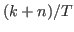, where
 is the number of estimated parameters,
is the number of estimated parameters,  is the number of observables,
and
is the number of observables,
and  is the number of observations. NB: The previous method
of declaring
is the number of observations. NB: The previous method
of declaring dsge_prior_weightas a parameter and then calibrating it is now deprecated and will be removed in a future release of Dynare. Some of objects arising during estimation are stored with their values at the mode in oo_.dsge_var.posterior_mode.dsge_varTriggers the estimation of a DSGE-VAR model, where the weight of the DSGE prior of the VAR model will be estimated (as in Adjemian et alii (2008)). The prior on the weight of the DSGE prior,
dsge_prior_weight, must be defined in theestimated_paramssection. NB: The previous method of declaringdsge_prior_weightas a parameter and then placing it inestimated_paramsis now deprecated and will be removed in a future release of Dynare.dsge_varlag = INTEGERThe number of lags used to estimate a DSGE-VAR model. Default:
4.posterior_sampling_method=NAMESelects the sampler used to sample from the posterior distribution during Bayesian estimation. Default: ’random_walk_metropolis_hastings’
'random_walk_metropolis_hastings'Instructs Dynare to use the Random-Walk Metropolis-Hastings. In this algorithm, the proposal density is recentered to the previous draw in every step.
'tailored_random_block_metropolis_hastings'Instructs Dynare to use the Tailored randomized block (TaRB) Metropolis-Hastings algorithm proposed by Chib and Ramamurthy (2010) instead of the standard Random-Walk Metropolis-Hastings. In this algorithm, at each iteration the estimated parameters are randomly assigned to different blocks. For each of these blocks a mode-finding step is conducted. The inverse Hessian at this mode is then used as the covariance of the proposal density for a Random-Walk Metropolis-Hastings step. If the numerical Hessian is not positive definite, the generalized Cholesky decomposition of Schnabel and Eskow (1990) is used, but without pivoting. The TaRB-MH algorithm massively reduces the autocorrelation in the MH draws and thus reduces the number of draws required to representatively sample from the posterior. However, this comes at a computational costs as the algorithm takes more time to run.
'independent_metropolis_hastings'Use the Independent Metropolis-Hastings algorithm where the proposal distribution - in contrast to the Random Walk Metropolis-Hastings algorithm - does not depend on the state of the chain.
'slice'Instructs Dynare to use the Slice sampler of Planas, Ratto, and Rossi (2015). Note that
'slice'is incompatible withprior_trunc=0.
posterior_sampler_options = (NAME, VALUE, ...)A list of NAME and VALUE pairs. Can be used to set options for the posterior sampling methods. The set of available options depends on the selected posterior sampling routine (i.e. on the value of option posterior_sampling_method):
'random_walk_metropolis_hastings'-
Available options are:
'proposal_distribution'Specifies the statistical distribution used for the proposal density.
'rand_multivariate_normal'Use a multivariate normal distribution. This is the default.
'rand_multivariate_student'Use a multivariate student distribution
'student_degrees_of_freedom'Specifies the degrees of freedom to be used with the multivariate student distribution. Default: 3
'use_mh_covariance_matrix'Indicates to use the covariance matrix of the draws from a previous MCMC run to define the covariance of the proposal distribution. Requires the load_mh_file-option to be specified. Default: 0
'scale_file'Provides the name of a _mh_scale.mat-file storing the tuned scale factor from a previous run of
mode_compute=6'save_tmp_file'Save the MCMC draws into a
_mh_tmp_blck-file at the refresh rate of the status bar instead of just saving the draws when the current_mh*_blck-file is full. Default: 0
'independent_metropolis_hastings'-
Takes the same options as in the case of
random_walk_metropolis_hastings 'slice'-
'rotated'Triggers rotated slice iterations using a covariance matrix from initial burn-in iterations. Requires either
use_mh_covariance_matrixorslice_initialize_with_mode. Default: 0'mode_files'For multimodal posteriors, provide the name of a file containing a
nparam by nmodesvariable calledxparamsstoring the different modes. This array must have one column vector per mode and the estimated parameters along the row dimension. With this info, the code will automatically trigger therotatedandmodeoptions. Default:[].'slice_initialize_with_mode'The default for slice is to set
mode_compute = 0and start the chain(s) from a random location in the prior space. This option first runs the mode-finder and then starts the chain from the mode. Together withrotated, it will use the inverse Hessian from the mode to perform rotated slice iterations. Default: 0'initial_step_size'Sets the initial size of the interval in the stepping-out procedure as fraction of the prior support i.e. the size will be initial_step_size*(UB-LB).
initial_step_sizemust be a real number in the interval [0, 1]. Default: 0.8'use_mh_covariance_matrix'See use_mh_covariance_matrix. Must be used with
'rotated'. Default: 0'save_tmp_file'See save_tmp_file. Default: 1.
'tailored_random_block_metropolis_hastings'-
new_block_probability = DOUBLESpecifies the probability of the next parameter belonging to a new block when the random blocking in the TaRB Metropolis-Hastings algorithm is conducted. The higher this number, the smaller is the average block size and the more random blocks are formed during each parameter sweep. Default:
0.25.mode_compute = INTEGERSpecifies the mode-finder run in every iteration for every block of the TaRB Metropolis-Hastings algorithm. See mode_compute. Default:
4.optim = (NAME, VALUE, ...)Specifies the options for the mode-finder used in the TaRB Metropolis-Hastings algorithm. See optim.
'scale_file'See scale_file.
'save_tmp_file'See save_tmp_file. Default: 1.
moments_varendoTriggers the computation of the posterior distribution of the theoretical moments of the endogenous variables. Results are stored in
oo_.PosteriorTheoreticalMoments(see oo_.PosteriorTheoreticalMoments). The number of lags in the autocorrelation function is controlled by thearoption.contemporaneous_correlationSee contemporaneous_correlation. Results are stored in
oo_.PosteriorTheoreticalMoments. Note that thenocorr-option has no effect.no_posterior_kernel_densityShuts off the computation of the kernel density estimator for the posterior objects (see density-field).
conditional_variance_decomposition = INTEGERSee below.
conditional_variance_decomposition = [INTEGER1:INTEGER2]See below.
conditional_variance_decomposition = [INTEGER1 INTEGER2 …]Computes the posterior distribution of the conditional variance decomposition for the specified period(s). The periods must be strictly positive. Conditional variances are given by
 . For
period 1, the conditional variance decomposition provides the
decomposition of the effects of shocks upon impact. The results are
stored in
. For
period 1, the conditional variance decomposition provides the
decomposition of the effects of shocks upon impact. The results are
stored in
oo_.PosteriorTheoreticalMoments.dsge.ConditionalVarianceDecomposition, but currently there is no displayed output. Note that this option requires the optionmoments_varendoto be specified.filtered_varsTriggers the computation of the posterior distribution of filtered endogenous variables/one-step ahead forecasts, i.e. 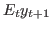. Results are stored in
oo_.FilteredVariables(see below for a description of this variable)smootherTriggers the computation of the posterior distribution of smoothed endogenous variables and shocks, i.e. the expected value of variables and shocks given the information available in all observations up to the final date (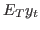). Results are stored in
oo_.SmoothedVariables,oo_.SmoothedShocksandoo_.SmoothedMeasurementErrors. Also triggers the computation ofoo_.UpdatedVariables, which contains the estimation of the expected value of variables given the information available at the current date (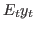). See below for a description of all these variables.forecast = INTEGERComputes the posterior distribution of a forecast on INTEGER periods after the end of the sample used in estimation. If no Metropolis-Hastings is computed, the result is stored in variable
oo_.forecastand corresponds to the forecast at the posterior mode. If a Metropolis-Hastings is computed, the distribution of forecasts is stored in variablesoo_.PointForecastandoo_.MeanForecast. See Forecasting, for a description of these variables.texsee tex.
kalman_algo = INTEGER-
0Automatically use the Multivariate Kalman Filter for stationary models and the Multivariate Diffuse Kalman Filter for non-stationary models
1Use the Multivariate Kalman Filter
2Use the Univariate Kalman Filter
3Use the Multivariate Diffuse Kalman Filter
4Use the Univariate Diffuse Kalman Filter
Default value is
0. In case of missing observations of single or all series, Dynare treats those missing values as unobserved states and uses the Kalman filter to infer their value (see e.g. Durbin and Koopman (2012), Ch. 4.10) This procedure has the advantage of being capable of dealing with observations where the forecast error variance matrix becomes singular for some variable(s). If this happens, the respective observation enters with a weight of zero in the log-likelihood, i.e. this observation for the respective variable(s) is dropped from the likelihood computations (for details see Durbin and Koopman (2012), Ch. 6.4 and 7.2.5 and Koopman and Durbin (2000)). If the use of a multivariate Kalman filter is specified and a singularity is encountered, Dynare by default automatically switches to the univariate Kalman filter for this parameter draw. This behavior can be changed via the use_univariate_filters_if_singularity_is_detected option. fast_kalman_filterSelect the fast Kalman filter using Chandrasekhar recursions as described by Herbst, 2015. This setting is only used with
kalman_algo=1orkalman_algo=3. In case of using the diffuse Kalman filter (kalman_algo=3/lik_init=3), the observables must be stationary. This option is not yet compatible with analytic_derivation.kalman_tol = DOUBLENumerical tolerance for determining the singularity of the covariance matrix of the prediction errors during the Kalman filter (minimum allowed reciprocal of the matrix condition number). Default value is
1e-10diffuse_kalman_tol = DOUBLENumerical tolerance for determining the singularity of the covariance matrix of the prediction errors (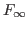) and the rank of the covariance matrix of the non-stationary state variables (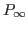) during the Diffuse Kalman filter. Default value is
1e-6filter_covarianceSaves the series of one step ahead error of forecast covariance matrices. With Metropolis, they are saved in oo_.FilterCovariance, otherwise in oo_.Smoother.Variance. Saves also k-step ahead error of forecast covariance matrices if
filter_step_aheadis set.filter_step_ahead = [INTEGER1:INTEGER2]See below.
filter_step_ahead = [INTEGER1 INTEGER2 …]Triggers the computation k-step ahead filtered values, i.e. 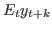. Stores results in
oo_.FilteredVariablesKStepAhead. Also stores 1-step ahead values inoo_.FilteredVariables.oo_.FilteredVariablesKStepAheadVariancesis stored iffilter_covariance.filter_decompositionTriggers the computation of the shock decomposition of the above k-step ahead filtered values. Stores results in
oo_.FilteredVariablesShockDecomposition.smoothed_state_uncertaintyTriggers the computation of the variance of smoothed estimates, i.e.
Var_T(y_t). Stores results inoo_.Smoother.State_uncertainty.diffuse_filterUses the diffuse Kalman filter (as described in Durbin and Koopman (2012) and Koopman and Durbin (2003) for the multivariate and Koopman and Durbin (2000) for the univariate filter) to estimate models with non-stationary observed variables.
When
diffuse_filteris used thelik_initoption ofestimationhas no effect.When there are nonstationary exogenous variables in a model, there is no unique deterministic steady state. For instance, if productivity is a pure random walk:
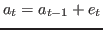
any value of 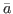 of 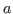 is a deterministic steady state for productivity. Consequently, the model admits an infinity of steady states. In this situation, the user must help Dynare in selecting one steady state, except if zero is a trivial model’s steady state, which happens when the
linearoption is used in the model declaration. The user can either provide the steady state to Dynare using asteady_state_modelblock (or writing a steady state file) if a closed form solution is available, see steady_state_model, or specify some constraints on the steady state, see equation_tag_for_conditional_steady_state, so that Dynare computes the steady state conditionally on some predefined levels for the non stationary variables. In both cases, the idea is to use dummy values for the steady state level of the exogenous non stationary variables.Note that the nonstationary variables in the model must be integrated processes (their first difference or k-difference must be stationary).
selected_variables_onlyOnly run the classical smoother on the variables listed just after the
estimationcommand. This option is incompatible with requesting classical frequentist forecasts and will be overridden in this case. When using Bayesian estimation, the smoother is by default only run on the declared endogenous variables. Default: run the smoother on all the declared endogenous variables.cova_compute = INTEGERWhen
0, the covariance matrix of estimated parameters is not computed after the computation of posterior mode (or maximum likelihood). This increases speed of computation in large models during development, when this information is not always necessary. Of course, it will break all successive computations that would require this covariance matrix. Otherwise, if this option is equal to1, the covariance matrix is computed and stored in variablehhof MODEL_FILENAME_mode.mat. Default is1.solve_algo = INTEGERSee solve_algo.
order = INTEGEROrder of approximation, either
1or2. When equal to2, the likelihood is evaluated with a particle filter based on a second order approximation of the model (see Fernandez-Villaverde and Rubio-Ramirez (2005)). Default is1, ie the likelihood of the linearized model is evaluated using a standard Kalman filter.irf = INTEGERSee irf. Only used if bayesian_irf is passed.
irf_shocks = ( VARIABLE_NAME [[,] VARIABLE_NAME …] )See irf_shocks. Only used if bayesian_irf is passed.
irf_plot_threshold = DOUBLESee irf_plot_threshold. Only used if bayesian_irf is passed.
aim_solverSee aim_solver.
sylvester = OPTIONSee sylvester.
sylvester_fixed_point_tol = DOUBLElyapunov = OPTIONDetermines the algorithm used to solve the Lyapunov equation to initialized the variance-covariance matrix of the Kalman filter using the steady-state value of state variables. Possible values for
OPTIONare:defaultUses the default solver for Lyapunov equations based on Bartels-Stewart algorithm.
fixed_pointUses a fixed point algorithm to solve the Lyapunov equation. This method is faster than the
defaultone for large scale models, but it could require a large amount of iterations.doublingUses a doubling algorithm to solve the Lyapunov equation (
disclyap_fast). This method is faster than the two previous one for large scale models.square_root_solverUses a square-root solver for Lyapunov equations (
dlyapchol). This method is fast for large scale models (available under MATLAB if the control system toolbox is installed; available under Octave if the control package from Octave-Forge is installed)
Default value is
defaultlyapunov_fixed_point_tol = DOUBLEThis is the convergence criterion used in the fixed point Lyapunov solver. Its default value is 1e-10.
lyapunov_doubling_tol = DOUBLEThis is the convergence criterion used in the doubling algorithm to solve the Lyapunov equation. Its default value is 1e-16.
use_penalized_objective_for_hessianUse the penalized objective instead of the objective function to compute numerically the hessian matrix at the mode. The penalties decrease the value of the posterior density (or likelihood) when, for some perturbations, Dynare is not able to solve the model (issues with steady state existence, Blanchard and Kahn conditions, ...). In pratice, the penalized and original objectives will only differ if the posterior mode is found to be near a region where the model is ill-behaved. By default the original objective function is used.
analytic_derivationTriggers estimation with analytic gradient. The final hessian is also computed analytically. Only works for stationary models without missing observations, i.e. for
kalman_algo<3.ar = INTEGERSee ar. Only useful in conjunction with option
moments_varendo.endogenous_priorUse endogenous priors as in Christiano, Trabandt and Walentin (2011). The procedure is motivated by sequential Bayesian learning. Starting from independent initial priors on the parameters, specified in the
estimated_params-block, the standard deviations observed in a "pre-sample", taken to be the actual sample, are used to update the initial priors. Thus, the product of the initial priors and the pre-sample likelihood of the standard deviations of the observables is used as the new prior (for more information, see the technical appendix of Christiano, Trabandt and Walentin (2011)). This procedure helps in cases where the regular posterior estimates, which minimize in-sample forecast errors, result in a large overprediction of model variable variances (a statistic that is not explicitly targeted, but often of particular interest to researchers).use_univariate_filters_if_singularity_is_detected = INTEGERDecide whether Dynare should automatically switch to univariate filter if a singularity is encountered in the likelihood computation (this is the behaviour if the option is equal to
1). Alternatively, if the option is equal to0, Dynare will not automatically change the filter, but rather use a penalty value for the likelihood when such a singularity is encountered. Default:1.keep_kalman_algo_if_singularity_is_detectedWith the default use_univariate_filters_if_singularity_is_detected=1, Dynare will switch to the univariate Kalman filter when it encounters a singular forecast error variance matrix during Kalman filtering. Upon encountering such a singularity for the first time, all subsequent parameter draws and computations will automatically rely on univariate filter, i.e. Dynare will never try the multivariate filter again. Use the
keep_kalman_algo_if_singularity_is_detectedoption to have theuse_univariate_filters_if_singularity_is_detectedonly affect the behavior for the current draw/computation.rescale_prediction_error_covarianceRescales the prediction error covariance in the Kalman filter to avoid badly scaled matrix and reduce the probability of a switch to univariate Kalman filters (which are slower). By default no rescaling is done.
qz_zero_threshold = DOUBLESee qz_zero_threshold.
taper_steps = [INTEGER1 INTEGER2 …]Percent tapering used for the spectral window in the Geweke (1992,1999) convergence diagnostics (requires mh_nblocks=1). The tapering is used to take the serial correlation of the posterior draws into account. Default:
[4 8 15].geweke_interval = [DOUBLE DOUBLE]Percentage of MCMC draws at the beginning and end of the MCMC chain taken to compute the Geweke (1992,1999) convergence diagnostics (requires mh_nblocks=1) after discarding the first mh_drop percent of draws as a burnin. Default:
[0.2 0.5].raftery_lewis_diagnosticsTriggers the computation of the Raftery and Lewis (1992) convergence diagnostics. The goal is deliver the number of draws required to estimate a particular quantile of the CDF
qwith precisionrwith a probabilitys. Typically, one wants to estimate theq=0.025percentile (corresponding to a 95 percent HPDI) with a precision of 0.5 percent (r=0.005) with 95 percent certainty (s=0.95). The defaults can be changed via raftery_lewis_qrs. Based on the theory of first order Markov Chains, the diagnostics will provide a required burn-in (M), the number of draws after the burnin (N) as well as a thinning factor that would deliver a first order chain (k). The last line of the table will also deliver the maximum over all parameters for the respective values.raftery_lewis_qrs = [DOUBLE DOUBLE DOUBLE]Sets the quantile of the CDF
qthat is estimated with precisionrwith a probabilitysin the Raftery and Lewis (1992) convergence diagnostics. Default:[0.025 0.005 0.95].consider_all_endogenousCompute the posterior moments, smoothed variables, k-step ahead filtered variables and forecasts (when requested) on all the endogenous variables. This is equivalent to manually listing all the endogenous variables after the
estimationcommand.consider_only_observedCompute the posterior moments, smoothed variables, k-step ahead filtered variables and forecasts (when requested) on all the observed variables. This is equivalent to manually listing all the observed variables after the
estimationcommand.number_of_particles = INTEGERNumber of particles used when evaluating the likelihood of a non linear state space model. Default:
1000.resampling = OPTIONDetermines if resampling of the particles is done. Possible values for OPTION are:
noneNo resampling.
systematicResampling at each iteration, this is the default value.
genericResampling if and only if the effective sample size is below a certain level defined by resampling_threshold*number_of_particles.
resampling_threshold = DOUBLEA real number between zero and one. The resampling step is triggered as soon as the effective number of particles is less than this number times the total number of particles (as set by number_of_particles). This option is effective if and only if option resampling has value
generic.resampling_method = OPTIONSets the resampling method. Possible values for OPTION are:
kitagawa,stratifiedandsmooth.filter_algorithm = OPTIONSets the particle filter algorithm. Possible values for OPTION are:
sisSequential importance sampling algorithm, this is the default value.
apfAuxiliary particle filter.
gfGaussian filter.
gmfGaussian mixture filter.
cpfConditional particle filter.
nlkfUse a standard (linear) Kalman filter algorithm with the nonlinear measurement and state equations.
proposal_approximation = OPTIONSets the method for approximating the proposal distribution. Possible values for OPTION are:
cubature,montecarloandunscented. Default value isunscented.distribution_approximation = OPTIONSets the method for approximating the particle distribution. Possible values for OPTION are:
cubature,montecarloandunscented. Default value isunscented.cpf_weights = OPTIONControls the method used to update the weights in conditional particle filter, possible values are
amisanotristani(Amisano et al (2010)) ormurrayjonesparslow(Murray et al. (2013)). Default value isamisanotristani.nonlinear_filter_initialization = INTEGERSets the initial condition of the nonlinear filters. By default the nonlinear filters are initialized with the unconditional covariance matrix of the state variables, computed with the reduced form solution of the first order approximation of the model. If
nonlinear_filter_initialization=2, the nonlinear filter is instead initialized with a covariance matrix estimated with a stochastic simulation of the reduced form solution of the second order approximation of the model. Both these initializations assume that the model is stationary, and cannot be used if the model has unit roots (which can be seen with the check command prior to estimation). If the model has stochastic trends, user must usenonlinear_filter_initialization=3, the filters are then initialized with an identity matrix for the covariance matrix of the state variables. Default value isnonlinear_filter_initialization=1(initialization based on the first order approximation of the model).
Note
If no mh_jscale parameter is used for a parameter in estimated_params,
the procedure uses mh_jscale for all parameters. If
mh_jscale option isn’t set, the procedure uses 0.2 for
all parameters. Note that if mode_compute=6 is used or the posterior_sampler_option
called scale_file is specified, the values set in estimated_params
will be overwritten.
“Endogenous” prior restrictions
It is also possible to impose implicit “endogenous” priors about IRFs and moments on the model during
estimation. For example, one can specify that all valid parameter draws for the model must generate fiscal multipliers that are
bigger than 1 by specifying how the IRF to a government spending shock must look like. The prior restrictions can be imposed
via irf_calibration and moment_calibration blocks (see IRF/Moment calibration). The way it works internally is that
any parameter draw that is inconsistent with the “calibration” provided in these blocks is discarded, i.e. assigned a prior density of 0.
When specifying these blocks, it is important to keep in mind that one won’t be able to easily do model_comparison in this case,
because the prior density will not integrate to 1.
Output
After running estimation, the parameters M_.params and
the variance matrix M_.Sigma_e of the shocks are set to the
mode for maximum likelihood estimation or posterior mode computation
without Metropolis iterations.
After estimation with Metropolis iterations (option
mh_replic > 0 or option load_mh_file set) the parameters
M_.params and the variance matrix M_.Sigma_e of the
shocks are set to the posterior mean.
Depending on the options, estimation stores results in various
fields of the oo_ structure, described below.